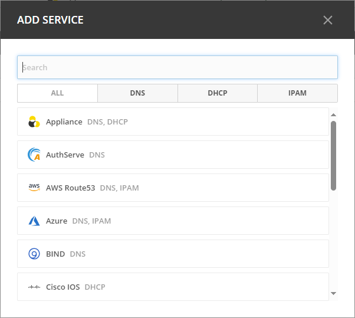

Service Management Actions
You must have the permission to administer DNS to add a new service to Micetro. Adding a new service is either a two or three step process, depending on the type of service being added.
Adding a Service
Select Admin on the top navigation bar.
Click Service Managment on the menu bar at the top of the admin workspace.
Click Add Service. The Add Service wizard opens.
Choose the platform you want to use. You’ll see a list of options to choose from, based on your license keys, DNS and IPAM. You can use the DNS, DHCP, and IPAM filters at the top to narrow down the list. You can also use the search box to search for the right service.
Select an agent:
This step is skipped for cloud services.
For ISC BIND and ISC DHCP this step is skipped, as the agent must be installed on the service host.
With the exception of the service types mentioned above, the agent can be installed on the Micetro Central host, on the Service host, or in the case of MS DNS/DHCP, ISC Kea, and Cisco IOS on a different host. If you have already added a service of this type before, you have the opportunity to either select from existing agents or create a new agent. A single agent can be used to manage multiple connections.
In the case of AuthServe, you can select from a list of available agents that were registered in the installation process.
To register a new agent, click the New Agent tab. Enter a hostname for the agent and, optionally, the IP address. If the hostname is not resolvable, an IP address is needed here.
Add service:
Cloud services: Each service type has its set of credentials in addition to the optional service name.
On-premises services
Provide the hostname or IP address of the service/server.
AuthServe uses channel as the connection string. Channel name is mapped to a host name in a configuration file on the server. ‘ansp’ is the default channel name which maps to localhost. To select a different host name the syntax is ‘“1.2.3.4#<someseceret>”’. Refer to AuthServe documentation for details.
Editing Services
Depending on the service, you can change the name and/or custom properties for the service. For example, if you need to refer to the service by another name or if you are connecting to the service by an IP Address and the IP Address has changed.
To edit a service:
Locate the service you want to edit in the Service Management area.
Double click the service or select it, and then select Edit service on the Action menu.
Make the necessary changes. Click Confirm to save the changes.
Other Service Actions
Depending on the selected service you can edit name and/or custom properties for the service. Any actions that can be performed on a selected server can either be accessed in the Actions above the list or by clicking the Row menu (…) button that appears when you hover over the right hand side of a row.
Action |
Description |
|---|---|
Attach service |
Attaches a previously detached server/service. |
Detach server |
Detaches or disables the server/service. When a server is detached, it is not synchronized with Micetro and excluded from various checks. When a server is detached, it is greyed out in the service view grid. The server can be attached again for it to be part of the server synchronization again.. |
View history |
Allows to view history for the selected server/service. |
Remove service |
Removes the selected server/service from Micetro. This option is only available with the Administrator account. |
Synchronize |
Triggers synchronization of zones and record or scopes. |
Server states
See Server states.